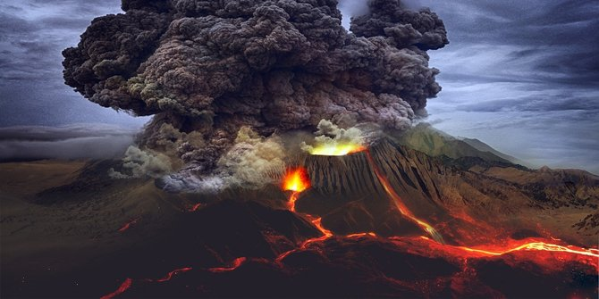
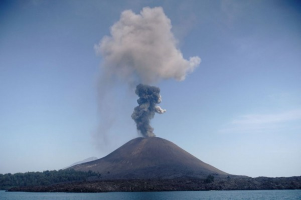
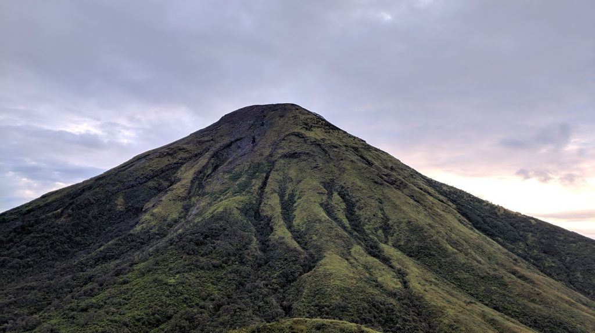

Gunung Berapi

merdeka.com
Menurut Kamus Besar Bahasa Indonesia (KBBI), Gunung sendiri berarti bukit yang sangat besar dan tinggi (biasanya tingginya lebih dari 600 m). Dalam kata tersebut, jika kita menambahkan kata API maka maknananya menjadi gunung yang didalamnya terdapat lahar panas. Di Indonesia sendiri banyak sekali gunung berapi. Beberapa diantaranya seperti Gunung Merapi, Gunung Slamet, Gunung Semeru dan masih banyak lagi. Sebagai seorang pendaki gunung, kita seharusnya mengetahui mana gunung yang boleh dilakaukan pendakian, dan mana gunung yang tidak boleh dilakukan pendakian. Gunung berapi inilah salah satu jenis gunung yang tidak boleh dilakukan pendakian atas dasar keamanan (safety) si pendaki
Gunung berapi sendiri memiliki beberapa tingkatan/status. Berikut penjabaranya :
- Gunung Berapi Aktif Normal
Tingkatan ini mengartikan bahwa gunung tersebut berapi tetapi masih normal. Maksudnya adalah gunung tersebut beraktivitas secara normal/baik, tidak adanya perubahan yang mengakibatkan status gunung tersebut berubah. Hal ini berarti gunung tersebut masih boleh dilakukan kegiatan pendakian.
- Gunung Berapi berstatus Waspada
Pada keadaan ini, gunung telah mengalami kenaikan status. Status ini diberikan karena gunung tersebut telah mengalami perubahan secara vulkanik. Pada keadaan ini juga mengakibatkan adanya perubahan pada bibir kawah gunung tersebut. Hal ini dikarenakan adanya gerakan pada sekitar kawah.
- Gunung Berapi berstatus Siaga
Status siaga diberikan pada gunung karena telah terjadi perubahan secara signifikan baik secara aktivitasnya, maupun secara bentuknya. Biasanya juga pada status ini, adanya letupan/ dentuman pada kawah gunung. Jika aktivitas pada gunung tidak terjadi penurunan, maka bisa diprediksikan akan terjadinya erupsi dalam jangka waktu dekat.
- Gunung Berapi berstatus Awas
Status inilah yang sudah sangat berbahaya. Gunung dengan status waspada diberikan ketika gunung tersebut mengalami letupan yang dahsyat. Beberapa ciri gunung ini bersatus awas adalah adanya wedus gembel/ awan panas. Pada kondisi ini juga sudah tidak diberikan adanya aktivitas masyarakat dalam jarak 2 Km
Itulah penjabaran singkat tingkatan/ status gunung berapi. Tingkatan gunung tersebut yang memberikan adalah Badan Meteorologi Klimatologi dan Geofisika (BMKG). Pada beberapa istilah, tingkatan tingkatan pada gunung berapi juga memiliki perincian tingkatan lagi. Seperti gunung berapi berstatus Waspada I, Waspada II, Waspada III. Begitupun dengan status Siaga dan Awas pad gunung berapi. Mereka memiliki perincian tingkatan yang demikian pula.
Gunung Aktif

thejakartapost.com
Sama halnya dengan gunung berapi, Gunung aktif adalah status lain dari gunung yang pernah erupsi, atau berpotensi untuk erupsi. Gunung aktif berartikan bahwa gunung tersebut memiliki aktivitas, tidak tidur dan sewaktu waktu bisa meletus.
Dalam konteks pendakian, gunung yang berstatus aktif boleh diadakan kegiatan pendakian selama gunung tersebut tidak berpotensi untuk meletus. Gunung yang aktif ini menempati posisi pada tingkatan gunung yang normal. Dibeberapa gunung juga ada yang masih membolehkan kegiatan pendakian saat gunung berstatus waspada.
Saat ini bumi atau tepatnya Indonesia sekarang sedang mendapatkan ujian pandemi covid-19, semua akses pendakian di Indonesia di tutup total. Tidak boleh ada kegiatan pendakian. Hal ini di tetapkan oleh pengelola gunung, atau taman nasional mengikuti aturan dari pemerintah untuk tidak adanya kegiatan yang melibatkan orang banyak. Sebelum adanya pandemi ini, gunung-gunung di Indonesia masih banyak yang dibuka, mengingat pendakian juga dimanfaatkan oleh masyarakat setempat sebagai lahan untk mendapatkan penghasilan.
Beberapa gunung di Indonesia yang aktif tetapi masih membuka gerbang pendakian -sebelum pandemi- seperti Gunung Ciremai, Gunung Arjuno Welirang, Gunung Bromo dst. Sebelum pandemi ini datang Gunung gunung tersebut masih membuka gerbang pendakian. Tetapi setelah adanya pandemi ini, seluruh gerbang pendkian ditutup total.
Berikut gunung gunung yang aktif tetapi ditutup, bahkan sebelum adanya pandemi covid-19 ini :
- Gunung Krakatau
- Gunung Slamet
- Gunung Kelud
- Gunung Merapi
Dst
Gunung gunung tersebut sudah ditutup karena memang statusnya yang sudah siaga. Dalam status ini, dinilai berbahaya jika masih adanya kegiatan pendakian
Gunung Pasif
indonesia-az.com
Gunung pasif disini yang dimaksudkan adalah gunung yang tidak berapi dan boleh adanya kegiatan pendakian. Biasanya gunung ini tidak terlalu tinggi juga. Bahkan dibeberapa gunung pasif ini sangat rekomendasi untuk dijadikan gunung pertama kali didaki bagi yang belum pernah melakukan pendakian. Gunung yang pasif juga tentunya lebih aman untuk dilakakukan pendakian atas alasan keamanan. Karena sudah sangat jelas, bila gunung tersebut tidak adanya aktivitas vulkanik, Kemungkinan adanya bahaya letupan gunung, erupsi, awan panas itu tidak ada. Hal inilah yang mendasarkan gunung gunung pasif sangat rekomendasi untuk dilakukan pendakian.
Seperti yang kita tahu, mendaki tidaklah hanya soal puncak ataupun keindahan yang menawan, tetapi lebih kearah bagaimana kita bisa kembali ke rumah berkumpul bersama keluarga kembali dengan selamat. Kita mungkin bisa mencapai puncak yang kita impikan, puncak yang kita bayang bayangkan, tapi apalah gunanya itu semua jika kita tidak bisa pulang dengan selamat.
Dibeberapa tempat, gunung gunung pasif memiliki keunikan tersendiri. Selain gunungnya yang tidak terlalu tinggi, beberapa gunung pasif juga memiliki keindahan puncak yang sangat indah. Beberapa diantaranya adalah :
- Gunung Prau
Gunung prau memang tidak terlalu tinggi. Gunung ini hanya memiliki ketinggian 2565 mdpl. Waktu perjalanan untuk menggapai puncaknya pun relativ cepat. Disisi lain gunung prau tidak terlalu tinggi, gunung ini juga memiliki pemandangan yang sangat bagus. Ketika kita sampai dipuncaknya, kita bisa melihat gagahnya gunung sindoro-sumbing dan gunung kembang. Tiga gunung terlihat secara jelas dan menjulang tinggi terlihat jelas di puncak prau. Keindahan inilah yang membuat prau menjadi salah satu rekomendasi bagi pendaki yang tidak ingin terlalu lelah, tetapi pemandanganya membuat meleleh.
- Gunung Kembang
Gunung kembang memiliki julukan adik daripada gunung sindoro. Julukan ini diberikan karena letaknya gunung kembang tepat dibawhnya gunung sindoro, bahkan diantara gunung kembang dan gunung sindoro, terlihat tanahnya masih menyatu. Dari gunung kembang, kita bisa melihat gagahnya gunung sindoro secara dekat. Perjalanan yang singkat dan keindahan pemandangnya lah yang membuat gunung ini banyak diminati para pendaki.
Mungkin itu saja, keindahan keindahan gunung lainya bisa anda cek di halaman kita yang lain. Sekian. Salam lestari